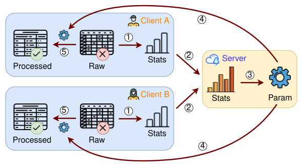
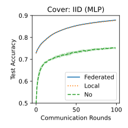
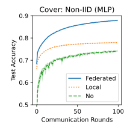

FedPS: Federated data Preprocessing
via aggregated Statistics
TL;DR: A unified framework for tabular data preprocessing in federated learning.
Why Federated Preprocessing?
Data preprocessing is a crucial step in machine learning pipelines, transforming raw data into a suitable format for model training. However, in federated learning, this step is often overlooked.
We introduce FedPS, a federated data preprocessing framework that uses aggregated summary statistics from clients to perform core preprocessing tasks, including scaling, encoding, transformation, discretization, and missing-value imputation, while keeping raw data decentralized.
Preprocessing Tasks
- Scaling: Normalize features to comparable ranges.
- Encoding: Convert categorical values into numerical form.
- Transformation: Apply non-linear mappings (distribution adjustments).
- Discretization: Convert continuous values into discrete form.
- Imputation: Fill in missing values (univariate or multivariate).
How FedPS Works?
The FedPS framework operates in five steps (Figure 1):
- 1 Compute local statistics;
- 2 Share and aggregate statistics;
- 3 Derive preprocessing parameters;
- 4 Broadcast parameters to clients;
- 5 Apply preprocessing locally.

For example, to implement StandardScaler, which ensures features have zero mean and unit variance:
- 1 Clients computes statistics (n, c, s), where n is number of samples, c=\sum_i x_i and s=\sum_i x_i^2.
- 2 Server aggregates these statistics by summation to obtain (N, C, S).
- 3 Server computes the global mean and variance: \mu=C/N, \sigma^2=S/N-\mu^2.
- 4 The server broadcasts (\mu, \sigma) to all clients.
- 5 Clients apply feature scaling on local data: x'=(x-\mu)/\sigma.
What Statistics Are Needed?
We examine the summary statistics required by common preprocessors in Scikit-learn. Table 1 highlights representative preprocessors and their formulations. The complete table and communication analysis appear in the paper.
| Categories | Preprocessors | Formulation | Statistics |
|---|---|---|---|
| Scaling | MinMaxScaler | (x-x_{\max})/(x_{\max}-x_{\min}) | Min, Max |
| StandardScaler | (x-\mu)/\sigma | Mean, Variance | |
| RobustScaler | (x-Q_2)/(Q_3-Q_1) | Quantile | |
| Encoding | LabelEncoder | ordinal(y) | Set Union |
| OneHotEncoder | one-hot(x) | Set Union, Frequent items | |
| OrdinalEncoder | ordinal(x) | Set Union, Frequent items | |
| Transformation | PowerTransformer | \psi(\lambda,x) | Sum, Mean, Variance |
| QuantileTransformer | CDF(x), \Phi^{-1}(CDF(x)) | Quantile | |
| Discretization | KBinsDiscretizer | j if T_j\le x<T_{j+1} | Min, Max, Quantile, Mean |
| Imputation | SimpleImputer | mean(x), median(x), freq(x) | Mean, Quantile, Freq-items |
| KNNImputer | mean(k-NN of x) | Min, Mean, Sum | |
| IterativeImputer | RegressionModel(x) | Sum |
Basic statistics, Min, Max, Mean, Variance, are inexpensive to compute in a federated setting. In contrast, statistics like quantiles and frequent items require substantial communication if computed exactly. For these, we use data sketching techniques (quantile sketches, frequent-items sketches) to compute them.
Some preprocessors rely on machine learning models, for example:
- KBinsDiscretizer uses k-means clustering.
- KNNImputer uses k-nearest neighbors.
- IterativeImputer uses Bayesian linear regression.
We extend these algorithms to the federated setting, with sufficient statistics summarized in Table 1.
Why Not Other Approaches?
Several preprocessing approaches are possible in federated learning:
- Centralized preprocessing: upload all data to the server.
- No preprocessing: skip preprocessing entirely.
- Transfer preprocessing: use public data or pre-trained models.
- Local preprocessing: each client processes data independently.
- Federated preprocessing: our proposed FedPS framework.
All alternatives except federated preprocessing have major limitations (Table 2).
| Approaches | Key Summary |
|---|---|
|
|
|
|
|
|
|
|
|
|
Experiments
We evaluate StandardScaler and OrdinalEncoder using three preprocessing strategies, federated preprocessing, local preprocessing, and no preprocessing, on the Cover dataset. We train using the FedAvg algorithm and an MLP model. Test accuracy results are shown in Figure 2.
We consider two types of client data distributions:
- IID setting: data is uniformly partitioned across clients.
- Non-IID setting: data is partitioned with skewed label distributions.


The results highlight three key observations:
- Preprocessing is essential, i.e, large accuracy gap vs. no preprocessing.
- Local preprocessing fails in non-IID settings due to inconsistent transforms.
- Federated preprocessing achieves stable and superior performance in all scenarios.
Citation
@misc{Xu2026fedps,
title={FedPS: Federated data Preprocessing via aggregated Statistics},
author={Xuefeng Xu and Graham Cormode},
year={2026},
eprint={2602.10870},
archivePrefix={arXiv},
primaryClass={cs.LG},
url={https://arxiv.org/abs/2602.10870},
}